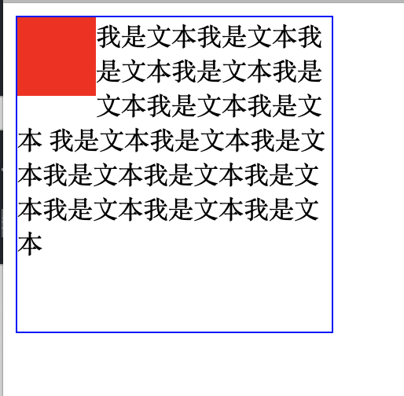

BFC的特点、创建方式以及应用
BFC全称为Block Formatting Context，即“块级格式化上下文”，它是页面中相对独立的一块渲染区域，它决定了内部的子元素如何进行摆放和定位，以及区域内部元素和区域外部元素之间的相互作用关系。
BFC的特点
- BFC可以包含浮动元素（闭合浮动）
- BFC所确定的区域不会与外部浮动元素发生重叠
- 位于同一BFC下的相邻块级子元素在垂直方向上会发生margin重叠
- 位于不同BFC下的相邻元素之间不会发生margin重叠
将以上特点一言以蔽之，即BFC在页面上是一个封闭的区域，如同“结界”一般。即便是内部的浮动元素也无法脱离该区域。该区域内部的子元素无法影响区域外部，同时也不受外部影响。
创建方式
- 浮动元素
- 绝对定位元素
- 非块级盒子的块级容器（例如inline-blocks，table-cells，and table-captions）
- overflow属性值不是“ visible”（visible是overflow的默认值）的块级盒子（视口除外）
- 这些元素就会为他们的内容创建一个BFC。
BFC的应用
清除元素之间的影响
<div class="content"> <div class="box"></div>我是文本我是文本我是文本我是文本我是文本我是文本我是文本 我是文本我是文本我是文本我是文本我是文本我是文本我是文本我是文本我是文本 </div>
.content{ width: 200px; height: 200px; order: 1px solid blue; } .box{ width: 50px; height: 50px; background: red; float: left; }
实现效果

这里我们可以看到红色方块对数字元素的显示构成了影响，如果我们只想让文本位于右侧，怎么处理呢？ 这里就可以使用BFC了，我们只需要在文本外套一层元素，并且把这个元素变成BFC，这样文本就不会受到浮动元素的影响了。我这里通过修改overflow属性使文本所在元素形成一个BFC。
<div class="content"> <div class="box"></div><div class="bfc">我是文本我是文本我是文本我是文本我是文本我是文本我是文本 我是文本我是文本我是文本我是文本我是文本我是文本我是文本我是文本我是文本</div> </div>
加上
.bfc { overflow: auto; }
实现效果
创建自适应布局
创建一个两列布局，其中左侧宽度不定，右侧宽度自适应占用剩下的空间，我们可以利用浮动元素和BFC元素的相互作用实现的。
解决margin重叠的问题
根据BFC的特性，同一个BFC下的两个相邻的盒子会出现垂直margin重叠的问题，这个问题会影响我们对页面布局的控制，通常我们可以为其中一个盒子添加一个父元素，并使其触发BFC，即可解决这个问题：
<div class="bfc"> <p>Test</p> </div> <p>Test</p> <p>Test</p>
<style type="text/css"> p { margin: 30px; height: 30px; background: gray; text-align: center; } .bfc { overflow: auto; } </style>
清除浮动引起的高度坍塌
如下面的例子，div.parent包含了两个div.child，而两个div由于赋予了float:left使其浮动，导致了div.parent高度的坍塌，此时我们给div.parent添加一个overflow:hidden属性值，使div.parent触发BFC，由于BFC下的盒子会包含浮动元素的高度，因此盒子就被撑了起来，高度塌陷的问题也就得到了解决。
<div class="parent"> this is a line <div class="child">child1</div> <div class="child">child2</div> </div>
<style type="text/css"> .parent { border: red solid 1px; overflow: hidden; } .child { border: black solid 1px; float: left; height: 40px; } </style>
最终效果如下